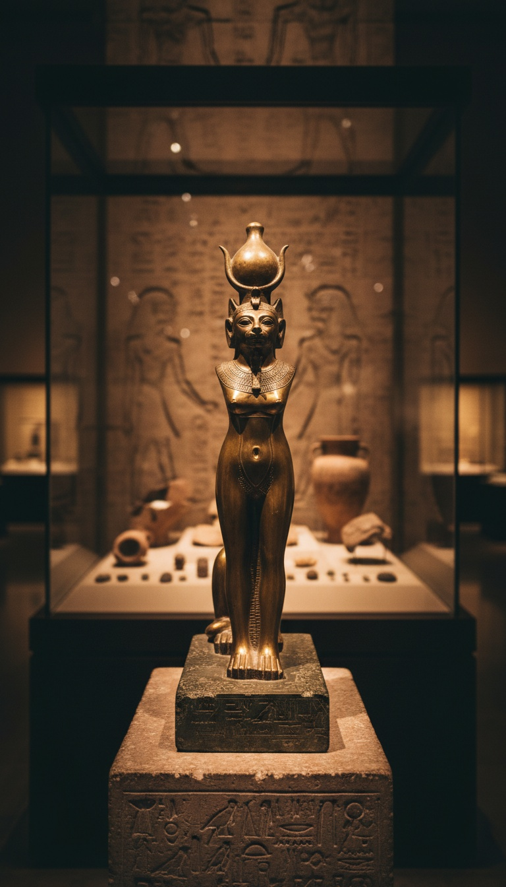

Kill a cat in ancient Egypt and the mob would execute you in the street. Around 59 BCE, a Roman soldier proved this, and the Greek historian Diodorus Siculus watched the entire thing happen from the pavement and wrote it down because he could not believe what he had seen.

The Historian Who Watched a Man Die Over a Cat
Diodorus Siculus was not writing mythology. He was a methodical Greek from Agyrium in Sicily, building a 40-volume world history called the Bibliotheca Historica. He spent years in Egypt around 59 BCE gathering firsthand accounts, and in Book I, Chapter 83, he stops mid-narrative to document what he personally witnessed on an Egyptian street.
A Roman soldier killed a cat. Diodorus records that the killing was accidental. It made no difference.
Officials from the court of Ptolemy XII arrived and begged the crowd to let the man go. They cited Rome's power. They cited the political relationship between Egypt and the empire. The crowd killed the Roman soldier anyway and dispersed. Diodorus wrote this down because, after cataloguing wars, famines, and massacres across the known world, even he could not believe what he had just watched.
One dead cat. One dead Roman. No punishment for the crowd. No record of Rome demanding an accounting. Both sides understood what had just happened, and neither one challenged it.
The King Sent Officials to Beg a Street Mob
Ptolemy XII Auletes was running the most politically compromised monarchy in the Mediterranean. He called himself Philoromaeus. Friend of Rome. Not because he admired them. Because he paid Julius Caesar and Pompey thousands of talents of silver to secure his crown, and even then Alexandria's mob had expelled him in 58 BCE, forcing him to grovel in Rome for reinstatement.
His entire survival strategy was keeping Roman soldiers alive and comfortable on Egyptian soil.
When the mob surrounded the soldier, Ptolemy did not send the palace guard. He sent officials. Men with words, not weapons. Because he knew that if he ordered soldiers into that crowd to protect a Roman who had killed a cat, he would lose the city. The crowd that tore apart a Roman soldier in defiance of the most dangerous military machine on earth was not bluffing. Ptolemy had already been expelled once. He was not going to test the mob twice.
Rome processed the soldier's death quietly. No reprisal. No diplomatic incident on record. The empire that was thirty years away from absorbing Egypt decided that pursuing justice for one dead soldier over one dead cat was not worth the political cost.
The cat won.
Bastet Did Not Represent Cats. She Inhabited Them.
The Roman soldier did not accidentally kill a cultural symbol. He killed, in the theological understanding of every Egyptian standing in that street, a physical vessel of the divine.
Bastet was not associated with cats the way Athena is associated with owls. Egyptian theology held that Bastet, daughter of Ra, the solar god who created existence with his eye, physically inhabited living cats. The cat was not a representation. It was the goddess walking in the world.
Her primary temple stood at Bubastis in the Nile Delta, a city the Egyptians called Per-Bast. The Temple of Bubastis housed living sacred cats maintained by a priestly class whose entire function was their care. Herodotus visited the city around 450 BCE, four centuries before Diodorus, and described the annual festival that drew 700,000 pilgrims, making it the largest religious gathering in Egypt's calendar. He wrote that more wine was consumed during that single week than at any other point in the year.
The Egyptian Museum in Cairo holds dozens of bronze Bastet figurines recovered from Bubastis sites, spanning three millennia of continuous worship. The British Museum holds mummified cats from the same cult practice, wrapped in linen and interred with the same ritual precision used for human priests. These were not pets given affectionate burials. They were emissaries of a goddess, treated in death with the same protocol the living goddess required.
Striking one down in the street was not an accident with cultural consequences. It was an act of violence against Ra's daughter, in Ra's country, committed in front of Ra's people.
One dead cat outweighed the wrath of an empire.
The Law Predated the Roman Empire by Fifteen Hundred Years
Diodorus is explicit that the soldier's death was not a mob acting outside the law. It was the law. He records that killing a cat in Egypt, regardless of intent, carried a mandatory death penalty codified in Egyptian civil and religious code.
He goes further. He writes that if a cat died of natural causes inside an Egyptian home, the household would shave their eyebrows in mourning. Not to perform grief. To shield themselves from any accusation of causing the animal's death. Because the accusation alone, without evidence, was enough to put the household at risk from the surrounding community.
Herodotus documented identical behavior during his visit in 450 BCE, four centuries before the Roman soldier ever set foot in Egypt. He wrote that Egyptians watching a house fire would form a human line around the flames, not to fight the fire, but to ensure no cats escaped into the street where they might come to harm. The burning building was the secondary concern.
The law ran for at least fifteen hundred years before that soldier appeared. Egyptian legal codes were among the most systematically developed in the ancient world. The penalty for cat killing sat in the same framework as the penalty for desecrating a temple or assaulting a priest. The Egyptians had thought carefully about what they were protecting and assigned it the same legal gravity as an attack on the sacred itself.
What Egypt Was Actually Guarding
The theology of Bastet runs alongside one precise historical alignment. Egypt was an agricultural civilization built entirely on grain. The Nile Valley produced the surplus that funded every pyramid, every temple, every military campaign. Grain stores were the infrastructure on which the civilization ran. And grain stores had two natural predators that no weapon could reliably neutralize: rats and serpents.
Cats eliminated both.
The deification happened because losing cats had visible and catastrophic consequences. A grain store consumed by rats was a city that starved before the next harvest. Bastet carried a sistrum in one hand and a shield in the other in her canonical iconography. The warrior goddess who protected the hearth was protecting the food supply. The Egyptians encoded that protection into theology because theology survives when laws get rewritten and customs drift and trade routes collapse.
When the animal standing between your civilization and starvation is the physical body of a god, no Roman soldier and no Roman senate can order you to treat it as disposable. The crowd in that street was not acting on superstition. They were enforcing a calculation that had kept Egypt alive for three thousand years. And they enforced it with their bare hands against an empire that could have burned their city to the ground.
The soldier's name did not survive. The cat's name did not survive. Diodorus recorded the incident around 36 BCE in the Bibliotheca Historica, decades after both were dead, and the text survived Rome's collapse in manuscripts eventually scattered across European libraries. What the text does not resolve is the more specific question. Egypt was obsessive about specificity. Every hieroglyph position carried meaning. Every mummification step followed rules refined across three millennia. The angle of a sarcophagus face relative to the cardinal directions was not accidental. The Egyptians who watched that soldier die, who refused to stand down for the most powerful empire on earth, who codified the cat's killing as equivalent to a crime against the divine, knew something about what they were protecting that the Romans never grasped.
Rome fell. Egypt's cat law outlasted the Republic, the Empire, and four centuries of Christian emperors who worked to dismantle everything the old religion had built. The question is what they were actually guarding underneath the theology. And why, when the answer arrived in the form of Roman swords and Roman authority and a Roman king begging for the soldier's life, the crowd decided the dead cat still mattered more than all of it. They were not acting on faith. They were enforcing something they knew. The soldier stumbled into it. We still do not know what it was.
Before you go
7 books the Vatican doesn't want you reading. Free PDF — the texts they cut, with sources. Joined by 140+ Inner Circle members.
No spam. Unsubscribe anytime.
Go deeper
The Hidden Canon, Vol. I — Enoch. Jubilees. Thomas. Mary. Judas. 90 pages, 14 chapters, every receipt cited. The books your Bible quietly removed.
Read the Canon →Books that informed this investigation
As an Amazon Associate, Hidden Epoch earns from qualifying purchases. Cost to you: nothing.
Research safely
The VPN we use to research without being tracked. First 3 months free.
Get NordVPN →